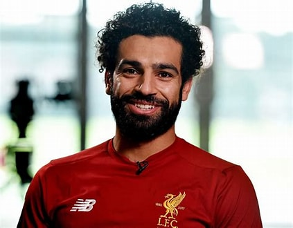
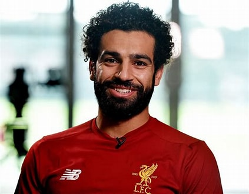

.jpg) 

.jpg)
What did the newspapers say about Mohamed Salah today?
He is considered one of the most prominent Arab and African players, as he has won many awards, most notably the Best Player Award in England 2018, the Goal of the Season Award in the English Premier League for the 2017-18 season, the Best African Player Award for 2017 and 2018, and the Best African Player Award by the BBC for 2017. And 2018, the best player in the English Premier League for the year 2018, and the award.
---------------------------------------------------------------------------------------------Mohamed Salah's achievements ?
The Egyptian star won the Best Player Award in the English Premier League once in 2018, and was crowned its top scorer on 3 occasions in 2018, 2019 and 2022. He became Liverpool’s all-time top scorer in European competitions, in addition to reaching fifth place on Liverpool’s all-time top scorers list in less than 6 seasons, and dozens of... Records related to the English Premier League
---------------------------------------------------------------------------------------------Origin of Mohamed Salah ?
Mohamed Salah Ghaly was born on June 15, 1992 in the village of Nagrig, in the city of Basyoun in Gharbia Governorate. Mohamed Salah grew up under difficult financial circumstances that forced him to give up his dream of university studies, but he did not give up and succeeded in achieving success that resonated throughout the world. 01/09/2019